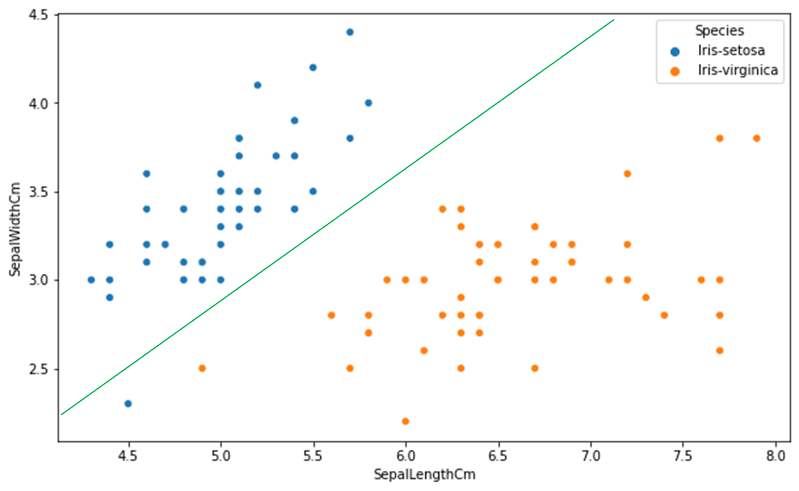

CH2
Classification, Regression
Classification은 대상을 구분짓는 문제로 최적의 Decision Boundary를 찾는게 목적이다.
Whether something will happen?
Q. 목동에 거주하는 30대 남자가 A라는 홍보에 효과를 거둘 수 있을까?
A. Yes or No
Q. Will this customer purchase service S1 if given incentive?
A. Yes or No
Q.Which service pakage(S1,S2,or None) will a customer likely purchase if given incentive problem?
A. S1, S2, or None
Regression(=value estimation)은 수치를 예상하는 문제다. 구하고자 하는 Attribute와 다른 Attribute들 사이에 연관성이 있음을 전제한다. 대상을 구분하는게 목적이 아닌만큼 Decision Boundary를 구하지 않는다. Regression은 모두 수치를 찾는 것이므로 분석가가 수치를 바탕으로 기준을 세운다면 Classification 문제로 바꿀 수 있다. 반면 Classification 문제는 Regression문제로 바꿀 수 없다.
-
Classification을 Regression으로 바꿀 수 없는 이유
모든 Classification은 대상을 구분 짓는 기준이 있다. 수능 등급이 1등급이라면 해당 시험의 성적이 상위 4%안에 들어야 한다는 기준이 있다. 학생들을 성적순으로 나열한 뒤 상위 4%까지 1등급으로 분류하겠다는 말이다. 앞서 설명한 기준을 충족시키기 위한 또다른 기준이 필요하다. 이때 필요한게 학생의 시험 점수이다. 시험 점수는 또한 학생의 역량을 구분짓기 위한 기준이다. 즉 수능 1등급이라는 기준을 위해서 서열을 매겨야 하고, 서열을 매기기 위해 성적이 필요하다. 그리고 성적은 개인을 역량이라는 잣대를 두고 평가하는 방법이다.
즉, 학생의 역량을 평가하기 위한 방법으로 시험 점수를 산출한다. 그리고 이렇게 산출된 점수를 가지고 서열을 세워 등급을 분류한다. Classification에는 대상을 분류하는 기준이 있다. 1~9등급으로 9개 Class에는 분류 기준이 모두 있다. 우리가 이런 Classification을 Regression으로 바꾸기 위해선 흠… 다시 생각해봐야겠다.
How much something will happen?
Q. 해당 구매자가 매장에서 구매할 금액은 얼마나 될까?
A. 구매자의 연봉이 5000~7000만원인 것으로 보아 100만원으로 예상함.(연봉대별 매장 내 구매 금액이 선형 관계에 있음을 근거로 구매자의 연봉을 통해 매장에 사용할 금액을 예측함.
Q.How much will this customer use the service?
A.The target variable is the amount of usage per customer.
Descriptive anlaysis Predictive analysis
Descriptive anlaysis는 일어난 일에 이유를 찾고자 하는 분석이라면
Predictive analysis는 일어난 일을 바탕으로 앞으로 어떻게 진행될지 예상하기 위한 분석이다.
CH4
Parameter, Variable, Argument
def multiple(a,b):
return a*b
Parameter은 a,b
Argument는 multiple(1,2)에서 1,2
Variable a = 1, b =2
linear function에서 parameter는 W를 말함.
Decision boundary
모델을 통해 얻게된 함수를 말함. Instance의 Class를 부여하는 기준이 됨. 아래 초록색 선이 Decision boundary임.

<그림 1-1> SepalLeng와 Sepal width에 따른 Iris 종류 분석
Classification function = a linear discriminant function
새로운 Instance의 Target-value가 무엇인지를 구분하는 기준
계산결과 function 위면 blue, 아래면 orange
$f(x) = w_0 +w_1x_1+w_2x_2 \cdots$ A linear discriminant function
A weighted Sum
model을 통해 알게된 attribute별 w값과 Instance가 가지고 있는 attribute(=x값)을 곱해서 계산한 합 $f(x) = w_0 +w_1x_1+w_2x_2 \cdots$ f(x) = A Weighted Sum
5개의 변수에 대한 Model을 만들었다면 $f(x) = w_0 +w_1x_1+w_2x_2+w_3x_3+w_4x_4+w_5x_5$ 가 된다.$w_0 - w_5$ 의 과거 데이터를 통해 찾은 weight || $x_1 - x_5$ instance x가 attribute별 가지고 있는 값
Objective Function
달성하고자 하는 수준을 만족시켜주는 Classification function을 말한다. linear function을 찾는 방법론으로는 Linear regression, logistic regression, support vector machine등이 있다.
ex) A와 B를 식별하는 모델의 목표 식별률이 80%라면 이를 달성 시킬 수 있는 a set of weight을 찾아야한다. Linear Regression 방법으로 Objective function을 찾겠다.
Class probability estimation
25page 참조
Loss function
이 함수는 기계에게 지금 사용한 방법이 잘못됐음을 인지시켜주는 용도로 활용된다. SVM을 예로들면 Instance가 Marin 내에 존재한다면 Instance와 margin의 위치 관계에 따라 패널티를 부과하는 방식이다. SVM을 통해 Objective Function을 구할 때 Margin의 넓이와 패널티 점수의 합으로 순위를 매기기 때문에 Margin이 넓은 것도 중요하지만 패널티도 적어야 한다. SVM말고도 데이터 과학에서 쓰이는 함수이고 Loss function도 여러 종류가 있다. SVM에서는 Hinge Loss를 주로 활용한다. 물론 다른 함수를 사용해도 되지만 결과를 봤을때 Hinge Loss가 가장 효과적이었기 때문에 보편적으로 사용하고 있다.

아래 그래프를 보면 f(x)가 -1일때 부터 Loss가 시작함을 알 수 있다. Loss가 발생하기 시작했다는 말 은 Margin내 Instance가 존재한다는 의미인데, f(x) -1 ~0 영역은 Decision Boundary를 넘지는 않았지만 Margin에 속한 Instance에게, 0~1 영역은 반대편 Margin 속한 Instance에게 부여되고 그 이후는 margin 조차 벗어난 Instance에게 패널티를 준다.(이렇게 해석하는게 정확한건지 확인하는 단계가 필요하니 공부하면서 맞고 틀림을 확인해보자.)

the odds, Log-odds(=Logit), Logistic function
Odds
이 함수는 확률을 실수로 바꾸기 위해 활용했다.
Log-odds
Linear Regression을 Probaility Value에 적용하기 위한 노력으로 부터 시작했다. 즉 확률적으로 표현된 대상을 실수화 시킨 뒤 Linear Regression을 하려는 시도에서 Log-odds를 발견하고 사용했다는 말이다.
이 함수는 odds를 확률을 실수로 바꾸는 용도로 활용 한다.
- Probality values ${\displaystyle (0,1)}$ ⇒ Real number ${\displaystyle (-\infty ,+\infty )}$
- $log-odds =ln(\frac{p}{1-p})=w_0 +w_1x_1+w_2x_2 \cdots$ 이 식의 의미는 선형회귀인
Logistic function
이 함수는 Log-odds와 정반대의 기능으로 실수를 확률로 변경하는 용도로 활용된다.
- Real number ${\displaystyle (-\infty ,+\infty )}$ ⇒ Probailty values${\displaystyle (0,1)}$기
Ch5
Holdout Data
Hold out은 감춰두다라는 뜻이 있음. overfitting을 방지하기 위한 목적으로 훈련 데이터 일부를 테스트용으로 남겨둔 데이터를 말한다. 테스트용 데이터인만큼 우리가 정답을 알고 있기에 모델이 적합한 결과를 산출하는지 확인할 수 있는 좋은 자료가 된다. 모든 데이터를 훈련에 사용하고 훈련에 사용한 데이터를 다시 모델을 테스트하기 위해 사용한다면 overfitting이 발생할 수 밖에 없게된다. 따라서 훈련 데이터 중 일부 데이터를 분할해 오로지 테스트 용도로 활용하려는 목적으로하는 데이터 셋을 만들어야 한다.
목적에 맞게 Testing set이라고도 부르기도 하며 단순히 테스트용 데이터를 의미하는 용어이기 때문에 Cross-validation이나 다른 방법론 설명 시 training set과 구분하기 위해 쓰인다.
Complexity
모델이 얼마나 복잡한지를 확인하는 지표이다. model이 고도화 되면(=복잡하면) 더 좋은 결과를 낼 것이라 예상하지만 이는 훈련 데이터에만 국한할 뿐 실제 데이터(또는 Holdout Data)에 적용하면 오히려 예측 정확도가 낮아진다. 훈련 데이터에서 정확도가 높아지는 이유는 모델이 복잡해질수록 개별 데이터들간 구분할 수 있는 조건들이 많아지기 때문이다.
너무 단순한 모델도 underfiting이 되므로 일정 수준 이상의 compexity를 필요로 하지만 최적의 모델을 만들기 위해서 complexity 또한 중요한 고려 대상이 된다.
Base error rate
Base Rate란 자연현상에서 통계적으로 발생하는 경우의 수를 말한다. 한 통계에 의하면 대한민국 왼손잡이 비율이 5%라고 한다. 대한민국 인구 중 무작위로 100명을 선발한다고 하면 평균 5명이 왼손잡이가 된다. Base error rate는 우리가 오른손잡이를 예측하는 모델을 만들때 가장 단순하면서 예측 정확도를 보장하는 방법의 오류 비율을 의미한다. 여기서 가장 단순한 모델이라 함은 모든 경우를 오른손으로 예상하면 된다. 평균적으로 95%는 오른손잡이기 때문이다.

Base error rate를 인터넷에 검색해보니 크게 사람들이 관심가지지 않는 용어인듯 하다.
내가 헷갈리는건 모델이 훌륭해서 Base error rate 밑으로 내려갈 수도 있지않은가 하는 의문 때문이다. 내가 그래프를 잘 못읽는건지 그래프 자체가 정확하지 않은건지 모르겠다.
Sweet spot
Tree induction에서 Tree size가 클수록(Leaf가 많이 생길수록) 훈련 데이터에 대한 정확도는 지속적으로 높아지나 테스트 데이터에서는 정확도가 떨어지는 지점을 의미한다.
이는 Tree Induction에서도 일정 수준 이상의 complextity는 예측 정확도를 떨어뜨린다는 점을 인지시킨다. Node가 많아질수록 개별 instance를 구분하는 기준이 많이생기는 것이므로 데이터에 모델이 과하게 적합해지는 결과를 낳는다.
Cross-Validation
훈련된 모델을 검증하기 위한 방법론 중 하나이다. 전체 데이터 셋을 5~10개의 데이터 셋으로 균등하게 분할 한뒤 , 각각의 데이터 셋을 각 한 번씩 테스트 데이터로 활용한다. 아래 그림을 보면 이해가 쉽다. 데이터를 총 5개로 구분하면 하나는 테스트 셋으로 나머지 4개는 훈련 셋으로 사용한다. 이런식으로 한다면 총 5번 다른 테스트 셋을 활용하게 된다.
같은 데이터를 분할한 뒤 5개의 개별적인 모델을 만드는 이유는 Test set이 모델을 검증하는 과정 자체도 검증이 필요하기 때문이다. 쉽게 말해 자동차를 수리할 때 전문가의 도움을 받아야하는데, 과연 이 사람이 정말로 믿고 맏길 수 있는 전문가인지 확인을 해야 실제로 수리가 됐는지 안됐는지를 알 수 있게 되는 것과 같다. 검증을 하기 위해 검증도구 자체가 그 역할을 하는지 확인하는 것도 중요하다는 말이다.
데이터 셋을 5개로 나눈 뒤 개별 셋이 한 번씩 테스팅 데이터 역할을 한다. 훈련 데이터로 학습된 모델을 다시 테스팅 데이터를 통해 검증하면 5개 모델의 결과가 나온다. 결과들의 평균과 분산은 ?
내가 궁금한건 훈련 셋에 따라 모델이 다른데 뭐가 generalization이 됐다는거지? 가장 최적의 모델을 선정하는 것도 아니고 이렇게 해서 하나의 모델을 generalization 했다고 봐야하는건가? 뭔가 내용이 뜨문뜨문 있다보니까 하나로 합쳐지지가 않네
Generalization을 위한 방법론 중에 하나고 아래 같은 방법으로 훈련시킨다는 것만 이해해보자. 그 이후는 추후 다른 학습에서 채워보자.

개별 모델을 검증한다기 보다는 어떤 방법론이 더 효과적인지를 검증하는 용도로 사용하는 것 같다.해당 데이터로 Logistic regression을 하니 평균 64%의 실제 예측값이 나오고 Tree로 하니 평균 69% 정도의 예측값이 나오니 이 데이터는 Classfication Tree가 더 높은 정확도를 제공해주는구나 생각해야되나 보다.

$arg \ max_w$
훈련 데이터에 가장 높은 정확도를 제공하는 w를 찾겠다라는 의미다.
Grid Search
최적의 parameter(=Hyperparameter)를 찾는 방법론 중 하나이다. 격자로 찾는 방식이므로 Grid Search라고 불린다. <책에서 관련 내용이 많이 언급되지 않으므로 나중에 공부하게 되면 넣어보자>
Multiple Comparisons
같은 모델을 같은 환경에서 여러차례 실험한 뒤 그 중 가장 좋은 결과값을 선정하는 행위를 의미한다. 데이터를 다루는 사람이라면 경계해야하는 오류이다. 예로들어 1이 나올 확률을 실험하기 위해 주사위를 120번 던지는 실험을 5차례 실행한다고 생각하자. 그 결과는 아래와 같다. multiple Comparisions은 여러차례 실험된 결과 중 가장 많이 나온 경우를, 즉 28회, 1이 나올 확률로 생각하는 행위이다. 실험 결과의 평균은 20회로 수렴하나 개별 실험 결과에는 범위 차이가 있다.
데이터 분석가는 이러한 오류가 발생하지 않도록 사전 인지하여 데이터의 신뢰성을 확보해야한다.
| 1회차 | 2회차 | 3회차 | 4회차 | 5회차 | |
|---|---|---|---|---|---|
| 1이 나온 경우 | 25 | 28 | 15 | 12 | 20 |
Generalization
훈련 데이터로 만들어진 모델에 테스트 데이터를 적용해 모델의 실제 정확도를 파악하는 행위를 말한다. 이와 관련한 여러가지 방법들이 있는데, 대표적으로 cross-validation이 있다. <Generalization의 목적은 여러 모델 중 실제 데이터(=테스팅 데이터)에 더 높은 예측 정확도를 가진 모델을 찾기 위함이다.> <만든 모델을 실제 데이터로 테스트해서 정확도가 얼마나 되는지 확인하는 단계이다. 테스트 데이터에서 얻게된 정확도보다 낮게 된다면 해당 모델이 훈련 데이터에 overfit 됐다는 점을 의심해야한다. >
Regularization
하나의 데이터 가장 적합한 모델을 찾기 위한 방법론이다. 최적의 모델을 선정하는 기준에 Complexity를 포함하여 과하게 복잡한 모델을 선정하지 않는다. 이렇게 선정된 모델은 최적의 W와 모델의 복잡도가 종합적으로 고려된 결과물이다. <DS에서 많이 사용되는 개념인 만큼 관련 내용을 추가적으로 학습하면 추가하자.>
$arg \ max_w = [fit(x,w) - \lambda \ \cdot penalty(w)]$
위 공식은 최적으로 학습된 모델은 최적의 w와 함께 복잡도를 적게 고려한 모델이 되어야 한다는 의미다. $\lambda$는 W가 하는 기능과 마찬가지로 Penalty의 중요도를 의미한다. $\lambda$ 와 $penalty(w)$는 데이터 과학자가 선정한다.
A Learning Curve
해당 모델을 대상으로하는 훈련 instance가 증가할수록 Generalization performance가 증가된되는지 확인하기 위한 용도로 사용한다. 일정량을 훈련 한뒤 test를 하고 추가적으로 훈련 한 뒤 테스트하는 방식을 누적하면 Learning curve를 만들 수 있다. 만들어진 그래프를 바탕으로 모델의 현재 상태와 사용하고 있는 Training set 또는 test set이 적합한지를 확인할 수 있다고 한다.
A fitting graph
해당 모델의 복잡도가 증가할수록 Generalization performance 증가량을 확인하기 위한 용도로 사용한다. Learning Curve를 만들때 처럼 중간에 모델을 테스트해서 performance의 변화를 추적한다.